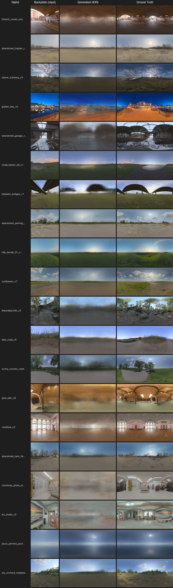

What it does
Backplate in, HDRI out
Given a single flat photograph of a location (the backplate), the model generates a full equirectangular HDRI panorama — a 360° image representing the complete lighting environment of that scene. Input: 128×128 RGB. Output: 128×256 equirectangular panorama.
The motivation is practical: in VFX, matching a backplate shot to a 3D object requires a real HDRI captured on set. If you didn't capture one, or can't go back, this is a way to reconstruct a plausible one from the photography you already have.
Results
Outputs
The L1 reconstruction path is working well — outputs are color-correct and scene-appropriate across a diverse test set (indoor, outdoor, day, night). The adversarial component adds sharpness in theory, but the discriminator has dominated training, so outputs are smooth rather than high-frequency. The underlying scene interpretation — sky type, light direction, approximate intensity — holds up.

Full validation grid — Input / Generated HDRI / Ground Truth across diverse test scenes · click to enlarge
Training
Training progress
Generated HDRI quality over training epochs
Architecture
Pix2Pix — U-Net + PatchGAN
Generator (U-Net): The backplate is first stretched to the target 2:1 panoramic aspect ratio, then encoded through 6 strided convolutional layers down to a 512×2×4 bottleneck — 4,096 values representing the whole scene. The decoder expands back up using transposed convolutions, with skip connections from each encoder layer feeding in spatial detail at each step.
Discriminator (PatchGAN): Rather than judging the whole image as real or fake, the discriminator scores each 70×70 pixel patch independently (output: 16×33 patch predictions). It sees the backplate and the HDRI together — so it's asking "does this HDRI make sense given this backplate?", not just "does this HDRI look real?".
Training data: 6,934 backplate+HDRI pairs. Batch size 16, 100 epochs. L1 loss weighted 50× over adversarial loss — pixel accuracy is the dominant signal, adversarial sharpness is secondary.
| Metric | Epoch 1 | Epoch 39 | Direction |
|---|---|---|---|
| L1 (reconstruction) | 0.23 | 0.15 | ↓ improving |
| GAN (adversarial) | 0.40 | 0.66 | ↑ discriminator winning |
| Discriminator | 0.31 | 0.047 | Too confident — healthy range: 0.2–0.5 |
The discriminator won the GAN arms race early — its loss collapsed to 0.047, at which point gradients to the generator from the adversarial path became too weak to drive meaningful change. The L1 path compensates, producing correct but blurry outputs. The next architectural change would replace the discriminator with a pre-trained perceptual loss (VGG), which sidesteps the GAN instability entirely while still measuring "does this look like a real image".
Full architecture diagram →